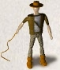
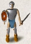
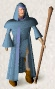
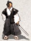
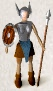
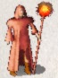
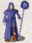
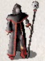

ou have just begun a game of NetHack. Your goal is to grab as much treasure as you can, retrieve the Amulet of Yendor, and escape the Mazes of Menace alive.
2.1 Classes
Your abilities and strengths for dealing with the hazards of adventure will vary with your background and training:
|  Archeologists understand dungeons pretty well; this enables them to move quickly and sneak up on the local nasties. They start equipped with the tools for a proper scientific expedition. |  Barbarians are warriors out of the hinterland, hardened to battle. They begin their quests with naught but uncommon strength, a trusty hauberk, and a great two-handed sword. |
| Cavemen and Cavewomen start with exceptional strength but, unfortunately, with neolithic weapons. |  Healers are wise in medicine and apothecary. They know the
herbs and simples that can restore vitality, ease pain, anesthetize,
and neutralize poisons; and with their instruments, they
can divine a being's state of health or sickness. Their medical
practice earns them quite reasonable amounts of money, with which
they enter the dungeon.
Healers are wise in medicine and apothecary. They know the
herbs and simples that can restore vitality, ease pain, anesthetize,
and neutralize poisons; and with their instruments, they
can divine a being's state of health or sickness. Their medical
practice earns them quite reasonable amounts of money, with which
they enter the dungeon. |
| Knights are distinguished from the common skirmisher by their devotion to the ideals of chivalry and by the surpassing excellence of their armor. |  Monks are ascetics, who by rigorous practice of physical and mental disciplines have become capable of fighting as effectively without weapons as with. They wear no armor but make up for it with increased mobility. |
|
Priests and Priestesses are clerics militant, crusaders
advancing the cause of righteousness with arms, armor, and arts
thaumaturgic. Their ability to commune with deities via prayer
occasionally extricates them from peril, but can also put them in
it. |
 Rangers are most at home in the woods, and some say slightly
out of place in a dungeon. They are, however, experts in archery
as well as tracking and stealthy movement.
Rangers are most at home in the woods, and some say slightly
out of place in a dungeon. They are, however, experts in archery
as well as tracking and stealthy movement. |
 Rogues are agile and stealthy thieves, with knowledge of
locks, traps, and poisons. Their advantage lies in surprise,
which they employ to great advantage.
Rogues are agile and stealthy thieves, with knowledge of
locks, traps, and poisons. Their advantage lies in surprise,
which they employ to great advantage. |
 Samurai are the elite warriors of feudal Nippon. They are lightly armored and quick, and wear the dai-sho, two swords of the deadliest keenness. |
 Tourists start out with lots of gold (suitable for shopping
with), a credit card, lots of food, some maps, and an expensive
camera. Most monsters don't like being photographed.
Tourists start out with lots of gold (suitable for shopping
with), a credit card, lots of food, some maps, and an expensive
camera. Most monsters don't like being photographed. |
 Valkyries are hardy warrior women. Their upbringing in the harsh Northlands makes them strong, inures them to extremes of cold, and instills in them stealth and cunning. |
| Wizards start out with a knowledge of magic, a selection of magical items, and a particular affinity for dweomercraft. Although seemingly weak and easy to overcome at first sight, an experienced Wizard is a deadly foe. |
Vulturesclaw offers you some extra choices:
|  Flame Mages have managed to harness mystical energies into the control of the element of fire. Notwithstanding their pet hell hounds, woe be unto anyone who stands in the way of a skilled mage casting a fireball. |  Ice Mages command the forces of cold. An experienced Mage can summon great blizzards yet remain unaffected by the turmoil of the elements. |
|  Necromancers have delved into the darkest of the magical lore, and mastered some of the most forbidden of the magical lore. Many have fallen to the armies of the undead that they are capable of bringing forth and controlling. | Undead Slayers are specialists, trained to hunt the undead as well as other incarnations of evil. They are well aware of the weaknesses of their foes and come prepared. Few denizens of darkness ever encounter such warriors of light and live to tell of it. |
| Yeomen are sturdy fighters. They are famed for their ability to stand doing nothing for hours. It is said that this is because they are none too bright. Yeomen can both take a lot of damage and inflict it on others. |
2.2 Races
You may also choose the race of your character:
- Dwarves are smaller than humans or elves, but are stocky and solid individuals. Dwarves' most notable trait is their great expertise in mining and metalwork. Dwarvish armor is said to be second in quality not even to the mithril armor of the Elves.
- Elves are agile, quick, and perceptive; very little of what goes on will escape an Elf. The quality of Elven craftsmanship often gives them an advantage in arms and armor.
- Gnomes are smaller than but generally similar to dwarves. Gnomes are known to be expert miners, and it is known that a secret underground mine complex built by this race exists within the Mazes of Menace, filled with both riches and danger.
- Humans are by far the most common race of the surface world, and are thus the norm by which other races are often compared. Although they have no special abilities, they can succeed in any role.
- Orcs are a cruel and barbaric race that hate every living thing (including other orcs). Above all others, Orcs hate Elves with a passion unequalled, and will go out of their way to kill one at any opportunity. The armor and weapons fashioned by the Orcs are typically of inferior quality.
Vulturesclaw has a few extra races:
- Doppelgangers have the enviable ability to change form at will, at a cost of some mystic energy (mana), although what they become may be a bit of a surprise, even for them.
- Hobbits are quick of hearing and sharp-eyed, and though they are inclined to be fat and do not hurry unnecessarily, they are nonetheless nimble and deft in their movements. A love of learning (other than genealogical lore) is far from general among them. Hobbits are difficult to daunt, or to kill, and at need can still handle arms.
- Lycanthropes are wild beasts who draw their strength from the phases of the moon, and can transform into wolves when they channel their magical energies. Even unarmed, a Lycanthrope is a savage fighter, as many scarred by their deadly claws can attest.
- Vampires strike fear into the heart of many. Their super-human strength, notorious dexterity and resiliance make them difficult to defeat while their almost hypnotic charm makes them dangerous opponents. Even their own Gods treat vampires with some distaste.